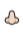

당신의 퍼스널 냄새는
부지런한 완벽주의자
만년필 펜촉 냄새

나의 특징은?
날카롭고 정확한 당신에겐 만년필 펜촉 냄새가 나요. 성공에 대한 갈망이 커요. 현실적이고 건설적인 대화 좋아해요. 뜬구름 잡는 얘기는 이해도 안되고 공감은 더 안돼
요. 배울 점이 없는 사람은 친구로 두고 싶지않아요.
자기주장이 강해요. 옳다고 생각하는 건 밀어붙이는 편이에요. 그치만 논리적으로 타당한 반박은 수용하는 편이에요. 다만, 반대를 위한 반대나 비꼬는 건 용납할 수 없
어요. 자기관리에 철저해요. 술을 마셔도 흐트러진 모습을 보여주는 일은 거의 없어요.
항상 부지런히 움직여요. 집에서도 책을 읽거나 청소를 하거나 요리를 하는 등 항상 할 일이 있어요. 눈물 별로 없어요. 외로움도 잘 안타요. 내 사전에 만약에란 없어
요. 맞으면 맞는거고 아니면 아닌거에요. 집요한 면이 있어서 궁금한 건 논문을 뒤져서라도 무조건 알아내야해요. 일 중독이고, 또 일을 잘해요. 일 못하는 사람 지켜
보는 건 고통스러운 일이에요. 차라리 총대 메고 내가 하는 게 속편해요.